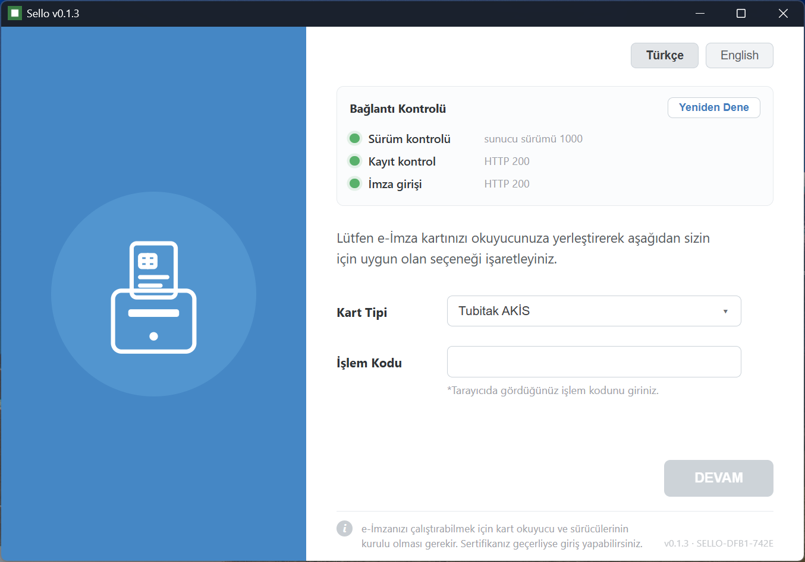
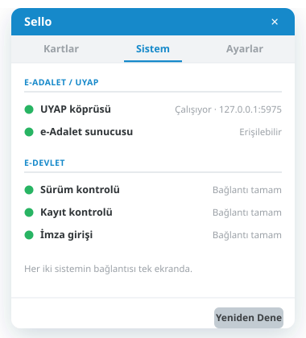
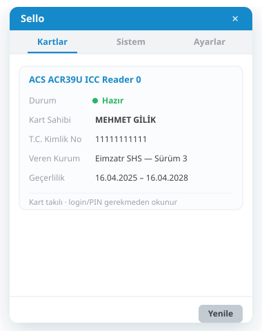
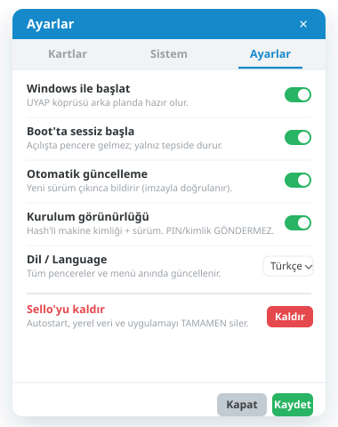
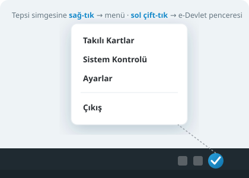

Sello, e-Devlet'e ve UYAP'a (e-Adalet) akıllı kart e-imzanızla girişi tek bir hafif uygulamada toplar. Java kurmazsınız, kurulum yapmazsınız — çift tıklarsınız. e-Devlet e-İmza Uygulaması ve UYAP E-İmza'nın Java yükünü ortadan kaldıran bağımsız bir alternatiftir.

Kimler için
UYAP ve e-Devlet'e gün içinde defalarca girenler — Java derdi olmadan, saniyeler içinde.
UYAP Avukat Portal'da dava açma, icra takibi ve dosya inceleme için kartla hızlı giriş.
Bilirkişi ve Arabulucu Portallarına e-imzayla giriş; rapor ve dosya işlemleri.
e-Devlet'e elektronik imza ile güvenli giriş — kurulum ve Java uğraşı olmadan.
Tek uygulama, iki sistem
İki ayrı e-imza istemcisinin yaptığı işi Sello tek başına görür — ayrı programlar ve Java kurmazsınız.
Tarayıcıda "Elektronik İmza ile Giriş" dediğinizde açılan imza adımını Sello penceresi üstlenir: kartı okur, işlem kodunu alır, PIN'inizle imzalar ve girişi tamamlar.
Sello arka planda tepside durur ve yerel bir imza köprüsü açar. UYAP Avukat/Vatandaş/ Bilirkişi portallarındaki e-imza adımı kartınızla bu köprüden imzalanır.
e-Devlet
JVM açılışını, Web Start indirmesini ve beklemeyi unutun. Sello yerleşik WebView2 ile anında açılır; arayüz alıştığınız akışın aynısıdır.
UYAP · e-Adalet
Sello tepside açıkken UYAP sayfasındaki imza penceresinde kartınız ve PIN'inizle imzalarsınız; Sello köprüsü imzayı arka planda üretir. Sistem Kontrolü, e-Adalet ve e-Devlet bağlantılarını tek ekranda gösterir.

Arka plan · v0.2.0
Sello sessizce tepside bekler; gerektiğinde hazırdır. Tek pencere, üç sekme: kartınızı görür, sistemi kontrol eder, ayarları yönetirsiniz.


Kontrol sizde
Sello arka planda hazır olması için Windows ile başlar — ama bu tamamen sizin kontrolünüzdedir. İstemediğinizde tek tıkla kapatır ya da makineden tamamen kaldırırsınız.

Kullanım
Kurulum yok. İndirdiğiniz tek dosyayı çalıştırırsınız; gerisi tanıdık akış.
Tek .exe'yi indir, çift tıkla. Tepsi simgesi belirir.
Okuyucuyu bağla. e-Devlet için tepsiye çift tıkla pencereyi aç.
İşlem kodunu gir, sözleşmeyi gör, dağınık tuşlarla PIN gir.
İmza kartta üretilir; e-Devlet ya da UYAP girişin tamamlanır.
Neden Sello
JVM, Web Start veya Python yok. Yerleşik WebView2 ile saniyeler içinde açılır.
Tek .exe. Kurulum gerekmez; USB'den bile çalıştırabilirsin.
Açılışta yeni sürümü görür, ed25519 imzasıyla doğrular ve kendini yeniler.
PIN sayacını düşürmeden okur; son deneme hakkında otomatik giriş yapmaz, uyarır.
Sertifika doğrulaması kapatılmaz. PIN ve imzalı veri loglanmaz.
Dil değişimi tüm pencerelere ve tepsi menüsüne anında yansır.
Güvenlik & gizlilik
İmza işlemi akıllı kartın içinde gerçekleşir; uygulama hassas veriyi saklamaz.
Sık sorulanlar
e-Devlet'e ve UYAP'a (e-Adalet) akıllı kart e-imzanızla girişi tek uygulamada toplayan, Java gerektirmeyen, tek dosya bir Windows uygulamasıdır. e-Devlet e-İmza Uygulaması ve UYAP E-İmza istemcilerinin Java yükünü ortadan kaldıran bağımsız bir alternatiftir.
Sello ile hayır. Java, JVM veya Java Web Start kurmaya gerek yoktur; Windows'un yerleşik WebView2 motorunu kullanır ve çift tıkla saniyeler içinde açılır.
Sello arka planda tepside çalışır ve yerel bir imza köprüsü açar. UYAP Avukat/Vatandaş/Bilirkişi portallarındaki e-imza adımı kartınızla bu köprüden imzalanır. UYAP E-İmza istemcisi kuruluysa Sello köprüsü çakışmamak için devre dışı kalır.
İmza akıllı kartın içinde üretilir; kartın özel anahtarı dışarı çıkmaz. PIN loglanmaz, bellekte kısa tutulup silinir. TLS doğrulaması her zaman açıktır. Kart kilitliyse veya son deneme hakkındaysa giriş otomatik denenmez.
Tepsi simgesine sağ tıklayıp Ayarlar'ı açın: "Windows ile başlat"ı kapatabilir veya "Sello'yu kaldır" ile autostart, yerel veri ve uygulamayı makineden tamamen kaldırabilirsiniz.
Hayır. Sello bağımsız, üçüncü taraf bir uygulamadır; TÜRKSAT, e-Devlet Kapısı veya T.C. Adalet Bakanlığı (UYAP) ile resmî bir bağlantısı ya da onayı yoktur. Anılan ürün ve marka adları sahiplerine aittir.
Windows 10/11 · akıllı kart okuyucusu ve kart sürücüsü (AKİS için akisp11.dll) gerekir.
İndirip kullanarak Kullanım Sözleşmesi'ni (EULA) kabul edersiniz · yalnız resmî kaynaktan indirin, yeniden dağıtım yasaktır · yazılım "olduğu gibi" sunulur.
İletişim
Geliştirici Mehmet Gilik'e doğrudan ulaşabilirsiniz.